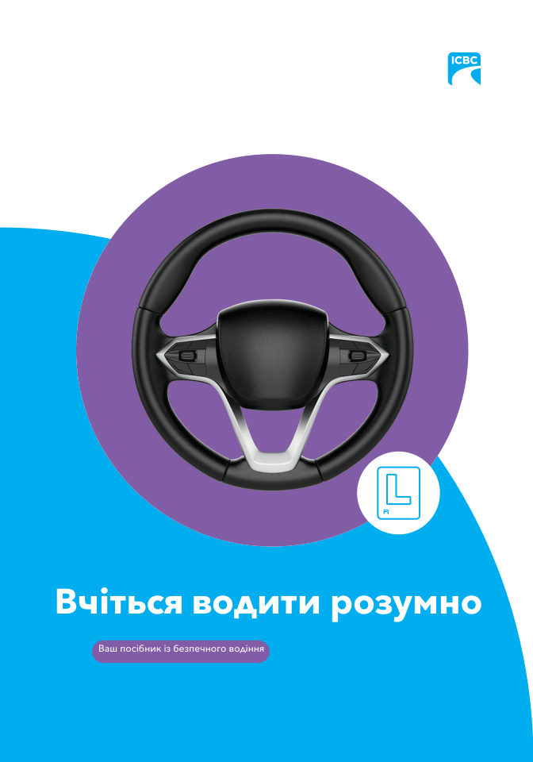

Вчіться водити розумно
Learn to Drive Smart — посібник водія ICBC для Британської Колумбії, українською мовою
Усе, що потрібно знати, щоб отримати водійські права в Британській Колумбії (Канада): правила дорожнього руху, дорожні знаки, як проходить тест на знання (knowledge test) і дорожній тест (road test). Повний переклад офіційного посібника ICBC.
Відкрити PDF 177 сторінок, 14 МБ, безкоштовно. Завантажити на пристрійДля кого цей посібник
Для українців, які переїхали до Британської Колумбії і готуються отримати водійські права BC: складають тест на знання для учнівського посвідчення (Class 7 L), готуються до дорожнього тесту (Class 7 N або Class 5) або обмінюють іноземне посвідчення. Це та сама книга, за якою готуються всі водії в провінції, тільки українською.
Що всередині
- Що взяти до офісу видачі посвідчень водія, оплата, періоди очікування перед повторним тестом
- Розділ 1. Ви за кермом — програма поетапного отримання прав (Graduated Licensing), обмеження для нових водіїв
- Розділ 2. Ви і ваш транспортний засіб — керування, дзеркала, ремені, страхування
- Розділ 3. Знаки, сигнали та дорожня розмітка
- Розділ 4. Правила дорожнього руху — швидкість, перехрестя, повороти, право проїзду, паркування
- Розділ 5. Дивись – думай – дій — як передбачати небезпеку
- Розділ 6. Спільне користування дорогою — пішоходи, велосипедисти, мотоцикли, вантажівки, шкільні автобуси
- Розділ 7. Особисті стратегії — втома, алкоголь, наркотики, телефон за кермом
- Розділ 8. Стратегії в надзвичайних ситуаціях — занос, відмова гальм, ДТП
- Розділ 9. Ваше посвідчення водія — класи прав, обмін іноземного посвідчення, штрафні бали
- Про тест на знання, про дорожній тест, поради екзаменаторів, які документи потрібні (ID)
Це неофіційний переклад. Його зробили волонтери, а не ICBC. Юридично чинним є англійський оригінал: Learn to Drive Smart на icbc.com. Якщо щось у перекладі й в оригіналі не збігається, правильним є оригінал.
Тест на знання в ICBC складають однією з мов, які пропонує ICBC; української серед них немає. Готуйтеся за цим перекладом, а самі питання практикуйте англійською, наприклад у безкоштовному тренувальному тесті ICBC.
Знайшли помилку?
Напишіть про неї на сторінці проєкту. Вкажіть номер сторінки й що саме неправильно.